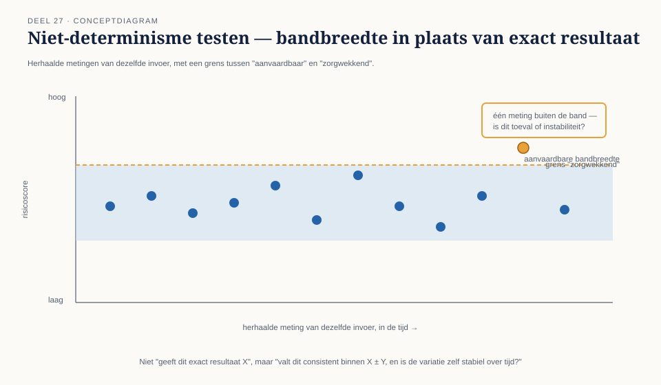

Deel 27 — Testen van AI-componenten
Reader · Ductus-cursus Testen en Kwaliteitsborging · niveau 3 (expert) · deel 27 van 30
Niveau 2, deel 20 behandelde testen mét generatieve AI — AI als hulpmiddel voor de tester. Dit deel behandelt het omgekeerde: hoe test je een AI-component die zelf onderdeel van het systeem is?
Leerdoelen
Na dit deel kun je:
- het verschil tussen deterministische en niet-deterministische componenten benoemen en de testconsequenties ervan toepassen;
- datakwaliteit als bepalende factor voor modelkwaliteit behandelen;
- bias en uitlegbaarheid testen met concrete, toetsbare criteria;
- acceptatiecriteria voor een AI-model formuleren die recht doen aan zijn aard;
- menselijke tussenkomst als testbare eis ontwerpen en verifiëren;
- het raakvlak met de EU AI Act plaatsen in je testaanpak.
Studielast: één dagdeel klassikaal, circa drie uur zelfstudie.
1. Een model dat twee keer een ander antwoord geeft
Meridiaan overweegt een AI-component in te zetten die, op basis van de mutatiegeschiedenis van een deelnemer, een risico-inschatting geeft: is deze mutatie waarschijnlijk correct, of verdient zij extra controle? Bij het testen viel iets op dat bij elk voorgaand systeem in deze cursus ondenkbaar was: precies dezelfde invoer, twee keer aangeboden, gaf twee lichtelijk verschillende risicoscores.
Bij elk eerder systeem in deze cursus (WGP 2.0, het Mutatieplatform) was dit een bevinding — een functionele fout die om reparatie vraagt. Bij dit AI-component is het, tot op zekere hoogte, een intrinsiek kenmerk. Dat verschil verandert wat "testen" hier betekent.
Kernzin — Testen van deterministische systemen bewijst dat hetzelfde altijd hetzelfde oplevert. Testen van AI-componenten moet bewijzen dat de variatie binnen aanvaardbare grenzen blijft — een fundamenteel andere vraag.
2. Niet-determinisme
2.1 Wat het is en waarom het geen bug is
Sommige AI-modellen zijn, door hun aard, niet volledig deterministisch: dezelfde invoer kan een licht andere uitkomst geven, afhankelijk van interne willekeur of contextuele factoren. Dit is voor een deel een bewust ontwerpkenmerk van bepaalde modeltypen, geen technisch defect zoals flakiness (niveau 2, deel 17) — al kan het voor de gebruiker soms hetzelfde effect hebben.
2.2 De testconsequentie
In plaats van "geeft dit exact resultaat X", wordt de vraag "valt dit resultaat consistent binnen een aanvaardbare bandbreedte X ± Y, en is de variatie zelf stabiel over tijd?" Dit is een directe toepassing van de percentiel-discipline uit niveau 2, deel 19 (niet het gemiddelde alleen, maar de spreiding) — nu toegepast op uitkomstvariatie in plaats van op responstijd.

3. Datakwaliteit als modelkwaliteit
3.1 Het model is zo goed als de data waarop het is gevormd
Waar bij elk eerder systeem in deze cursus de testbasis een document was (deel 2, niveau 1) of een regel (deel 23, niveau 3), is bij een AI-model de trainingsdata zelf een vorm van testbasis: fouten, scheefheid of hiaten in die data werken door in elk resultaat van het model, op een manier die zelden expliciet zichtbaar is in de modeloutput zelf.
3.2 Testconsequenties
- Onderzoek de samenstelling van de trainingsdata op representativiteit voor de populatie waarop het model wordt toegepast — vergelijkbaar met representativiteit van een testomgeving (niveau 2, deel 15), maar hier toegepast op de basis van het model zelf.
- Test expliciet met ondervertegenwoordigde categorieën uit de eigen deelnemerspopulatie (bijvoorbeeld ongebruikelijke dienstverbandcombinaties) om te zien of het model daar systematisch slechter presteert.
4. Bias en uitlegbaarheid
4.1 Bias testen
Bias is een systematische afwijking in de uitkomst van een model die samenhangt met een kenmerk dat er niet toe zou moeten doen (bijvoorbeeld: het model scoort mutaties van bepaalde werkgeverscategorieën stelselmatig strenger, zonder inhoudelijke reden). Dit test je door de uitkomsten van het model te groeperen naar relevante subpopulaties en te controleren op systematische verschillen die niet door het daadwerkelijke risico worden verklaard — een reconciliatie-achtige vergelijking (deel 23), nu toegepast op groepsuitkomsten in plaats van totalen.
4.2 Uitlegbaarheid testen
Uitlegbaarheid betekent dat een model, voor een gegeven uitkomst, een voor mensen begrijpelijke reden kan geven — niet noodzakelijk de volledige interne werking, maar genoeg om een besluitvormer (de rolgrens, niveau 1, deel 1) te laten beoordelen of de uitkomst vertrouwd kan worden. Test dit door voor een reeks uitkomsten te vragen: is de gegeven uitleg consistent met de daadwerkelijke invoer, en zou een niet-technische lezer haar kunnen volgen?
Kernzin — Een model dat correcte scores geeft maar nooit kan uitleggen waarom, levert geen aantoonbare zekerheid (deel 23) op — het levert een bewering die niemand kan navolgen.
5. Acceptatiecriteria voor een model
5.1 Waarom klassieke acceptatiecriteria niet volstaan
Een acceptatiecriterium als "het model geeft het juiste antwoord" veronderstelt een orakel (deel 25) dat bij veel AI-toepassingen niet scherp bestaat — wat is "het juiste antwoord" bij een risico-inschatting die zelf een kansuitspraak is?
5.2 Een passender vorm
Acceptatiecriteria voor een model formuleren doorgaans: een minimale prestatiedrempel op een onafhankelijke testset (nooit dezelfde data als de training, vergelijkbaar met de eis van onafhankelijkheid uit deel 24), een maximale toelaatbare bias tussen subpopulaties (§4.1), en een minimale mate van uitlegbaarheid (§4.2) — samen een acceptatieprofiel in plaats van één enkel juist/onjuist-criterium.
6. Menselijke tussenkomst als testbare eis
6.1 Het model beslist niet — het adviseert
Consistent met de rolgrens die door de hele cursus loopt: een AI-component die risico-inschattingen geeft, mag het uiteindelijke besluit (extra controle wel of niet) niet zelfstandig nemen bij hoog-risicozaken — een mens met mandaat moet het advies kunnen overrulen, en dat mechanisme is zelf een testbare eis.
6.2 Wat je test
- Is er daadwerkelijk een zichtbaar, bruikbaar overrulemechanisme, of bestaat het alleen op papier (vergelijk het afvinkritueel, deel 26)?
- Wordt bijgehouden hoe vaak een mens het model overrulet, en wordt die informatie gebruikt om het model of het proces te verbeteren?
- Is helder wie verantwoordelijk is voor een beslissing die het advies van het model volgt zonder aanvullende beoordeling?
7. Raakvlak met de EU AI Act
Regelgeving rond AI-systemen ontwikkelt snel door en stelt eisen aan onder meer risicoclassificatie, documentatie en menselijk toezicht die direct aansluiten bij §5 en §6 van dit deel. Verifieer bij uitwerking en gebruik van dit materiaal de actuele stand van de EU AI Act en eventuele nationale uitvoeringswetgeving — dit is een van de snelst veranderende onderdelen van de hele cursus en vraagt bijzondere alertheid bij herhaald gebruik.
Kernbegrippen
niet-determinisme (geen bug, wel testconsequentie) · datakwaliteit als modelkwaliteit · bias testen · uitlegbaarheid testen · acceptatieprofiel voor een model · menselijke tussenkomst als testbare eis · raakvlak EU AI Act
Samenvatting in vijf zinnen
- Testen van AI-componenten verschuift van "geeft dit exact resultaat X" naar "blijft de variatie binnen een aanvaardbare, stabiele bandbreedte" — een fundamenteel andere vraag dan bij elk eerder systeem in deze cursus.
- Trainingsdata is zelf een vorm van testbasis: fouten of scheefheid erin werken door in elk resultaat, zelden expliciet zichtbaar in de output.
- Bias en uitlegbaarheid zijn beide toetsbaar — bias door groepsuitkomsten te vergelijken, uitlegbaarheid door te controleren of een gegeven reden consistent en navolgbaar is.
- Acceptatiecriteria voor een model vormen een profiel — een prestatiedrempel, een biasgrens, een uitlegbaarheidseis — in plaats van één enkel juist/onjuist-criterium.
- Menselijke tussenkomst is geen bijzaak maar een testbare eis: een overrulemechanisme dat alleen op papier bestaat, is de AI-versie van het afvinkritueel uit deel 26.